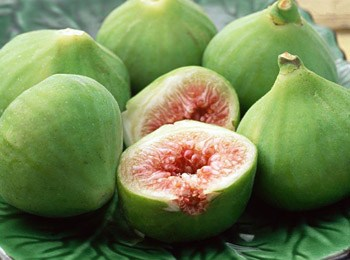

花果喜溫暖、乾燥、排水良好的砂質壤土，以台灣中南部較適合栽培。雖屬落葉性果樹，性喜強光，適於露天下種植，但在日照強盛時需防日燒。 因果實除了果蠅等多種蟲害外，露天栽培成熟果更易受鳥害，是栽培上必須考慮的因素。因此網室等設施栽培是一良好選擇。為了提高收益並附合設施內空間的利用， 在網室可採用密植、樹籬整枝法的方式，以增加產量。
台灣商業主要品種
布蘭瑞克
人們習慣稱其為「破布」，主要是因為它的葉子不好看，呈條狀，使得像一塊破布一樣。但布蘭瑞克是無花果中最甜的品種之一， 號稱無花果中的小甜點，而且它最大的優勢就是耐寒抗寒。

波姬紅
是目前台灣栽種面積最廣的品種，因為它的顏色紅潤討喜，結果早、結果後成熟速度快，不易產生病害、易於照顧培養，所以多數台灣栽種的農友多為波姬紅為主。
金傲芬
成熟果色在陽光下看起來就像是透著金色一樣，這種無花果的甜份較高，但是卻很清爽不膩口，吃起來喀呲喀呲的很有口感，相當適合鮮食食用，產出的品質較為豐盛； 成熟的果實會在表皮透出一條紋狀的密線，這正式完熟的象徵。

青島綠
果型大，口感好，是威海最古老的栽培樹種之一，又稱威海青皮。由於其適應性強，易栽易活、無蟲害、易管理，所以在種植過程中不打農藥不施化肥， 也不必澆水，其生長環境接近野生自然環境。